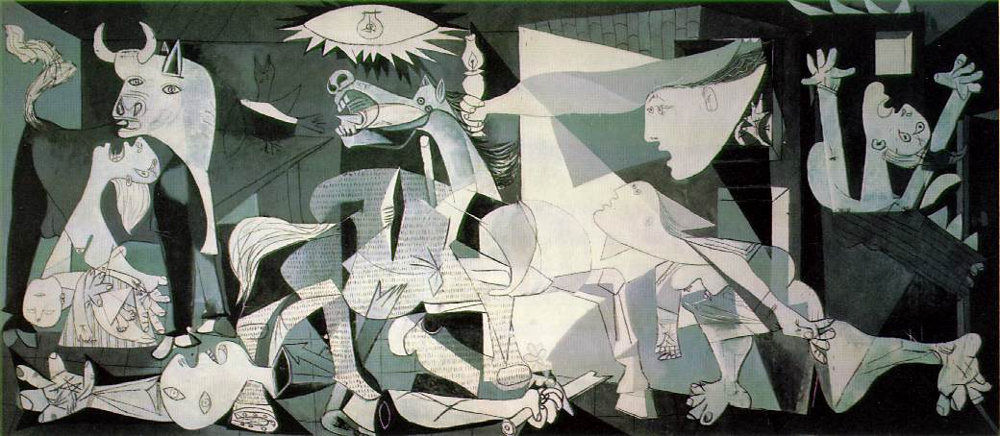

Nel 1934 Picasso soggiorna
in Spagna e il contatto con la sua terra fa risorgere nell’artista le originarie
passioni: la corrida, gli spettacoli popolari, la lotta dei galli. E’ la
ricchezza di queste immagini, unita allo spessore dei sentimenti, che è
alla base di Guernica.
Quando il governo repubblicano
di Spagna gli commissiona un’opera per ornare la grande sala del padiglione
spagnolo all’Esposizione Internazionale delle Arti e tecniche di Parigi,
Picasso si impegna a raffigurare il bombardamento della città basca
di Guernica da parte dell’aviazione del terzo Reich, avvenuto il 26 aprile
1937, episodio che sconvolse il mondo intero, avendo causato 2000 morti
in sole 3ore.
La composizione, di quasi
8 metri di lunghezza, vuole rappresentare l’abominevole brutalità
di questa azione contro la popolazione del villaggio, sotto forma di una
“Strage degli innocenti”.
Il centinaio di studi
preparatori realizzati tra il primo e il 9 maggio dello stesso anno testimoniano
l’attività febbrile di Picasso, condotta “a caldo” nei giorni immediatamente
seguenti la tragedia.
La vera novità
di quest’opera dal disegno affilato, drammatica visione di corpi sfatti,
visi stravolti, riecheggiante di urla lancinanti e strazianti nitriti di
cavalli agonizzanti, non è tanto nella costruzione compositiva quanto
dalla soluzione cromatica, che ammette solo il bianco, il nero e il grigio,
suggerita dalle immagini della città distrutta apparse sui giornali.
Quest’opera è
considerata la più intensamente drammatica di Picasso, che qui raggiunge
il suo apice di tensione creativa. Nel dipinto convergono immagini di opere
precedenti: il disperato movimento del grande cavallo era già presente
nella Corrida: morte di un torero; la straziante figura dalle braccia rivolte
al cielo, è una derivazione dalla Crocifissione.